01 / Research analytics
MedSeg-MRI
A research model-performance dashboard covering locked validation, class and region metrics, case exploration, model selection, QA, and spatial integrity.
DiceHD95QA traceability
View case study ↗Future project / In progress
A proposed platform for medical-device commercial analysis, regulatory evidence tracking, biomedical consulting, and post-market risk monitoring. The modules below define the planned scope.
Biomedical engineering portfolio
Biomedical engineer developing evidence-led analytics, medical AI evaluation, regulatory intelligence, and decision-support tools.
Selected projects
Completed projects are presented with their methods, outputs, evidence boundaries, and next steps.
A research model-performance dashboard covering locked validation, class and region metrics, case exploration, model selection, QA, and spatial integrity.
A medical-device regulatory, quality, biomedical, and predictive-risk intelligence platform built from an ETL notebook to interactive BI dashboards.
A planned biomedical platform combining medical-device sales intelligence, AI-supported regulatory readiness, consulting workflows, and post-market risk monitoring.
A traceable workflow-analytics prototype built from NYC DEP public-works orders: timestamp quality, activity workload, and valid start-to-completion timing. This source does not describe biomedical equipment service.
A department-neutral blueprint for catalogue, stock visibility, requests, approvals, auditable movements, and replenishment follow-up across locations.
A dashboard scope for monitoring partner-managed systems, update backlogs, SRS freshness, access blockers, and follow-up actions across indirect markets.
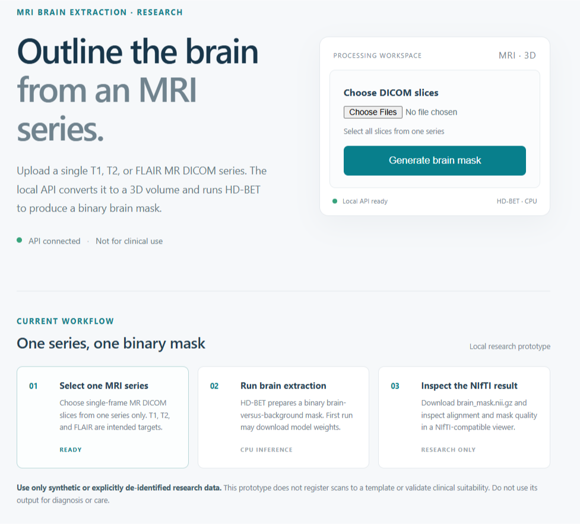
A local-first DICOM workflow that runs HD-BET on one MR series and returns a binary brain-mask NIfTI for inspection.
A completed, evidence-led research synthesis comparing MRIdian and Elekta Unity, their adaptive workflows, magnetic-field dosimetry, clinical use, and limits of the published evidence.
Future project roadmap
These are planned concepts, not completed products. Each one will be developed with evidence, privacy, explainability, and regulatory boundaries in mind.
Help medical-device teams understand product demand, territory performance, customer segments, distributor activity, and sales opportunities. The planned workflow would combine clean commercial data with device categories, account history, pipeline stages, and service signals.
Planned output:interactive commercial dashboard with account, territory, product, and opportunity views.Support teams preparing technical and quality documentation by organizing requirements, mapping evidence, identifying missing artifacts, and showing traceable review status. The assistant would summarize documents for human review rather than make regulatory decisions or replace a qualified regulatory professional.
Planned output:requirement-to-evidence matrix, review queue, and explainable gap report.Create a structured workspace for biomedical engineers and consultants to assess device needs, compare technical specifications, document risks, prepare recommendations, and communicate implementation plans to non-technical stakeholders.
Planned output:consultation templates, decision framework, device comparison model, and client-ready report.Extend the RegIntel 360 direction into a focused post-market surveillance tool for complaints, maintenance events, CAPA activity, audit findings, and emerging device risk. The goal is early visibility and prioritization, not automated safety conclusions.
Planned output:risk-driver dashboard, alert triage, trend analysis, and documented human approval steps.The dashboard turns a locked-validation result into a traceable research artifact. It separates overview performance from target-level detail, case-level exploration, epoch selection, and QA evidence.
End-to-end pipeline
Technical story
The details below are taken from the verified project release documents and dashboard evidence.
Each case uses four co-registered NIfTI channels ordered FLAIR, T1w, T1gd, and T2w. The verified workflow converts to channel-first, reorients images and labels to RAS, resamples to 1.25 mm isotropic spacing, uses bilinear interpolation for images and nearest-neighbor interpolation for labels, then applies nonzero per-channel MRI normalization.
The model is a MONAI 3D U-Net with 4 input channels, 4 output classes, channels 16–256, four downsampling strides, two residual units, and 4,811,129 parameters. Training used DiceCELoss, AdamW, learning rate 0.0001, weight decay 1e-05, batch size 1 case, four sampled patches per case, and a 128 × 128 × 96 ROI.
AMP runs became numerically unstable after epoch 16. Nonfinite gradients and logits were detected, unsafe checkpoints were rejected, and training was recovered with preserved finite checkpoints and unscaled FP32. Epoch 19 completed without reported numerical errors and was selected; epoch 20 was rejected after validation Dice collapsed to 0.2265.
Validation uses full-volume sliding-window inference with a 128 × 128 × 96 ROI, overlap 0.25, constant blending, and constant padding. The evaluation covers all 97 locked-validation cases and reports class and BraTS-style region metrics, deterministic 95% bootstrap intervals, HD95 in millimetres, and 1-mm surface Dice.
Architecture and delivery
The compact release preserves the evidence trail without pretending to be a production clinical deployment.
The release documents a reproducible CLI contract: supply a compatible 4D NIfTI and the verified epoch-19 checkpoint, then write a 3D prediction NIfTI. The compact folder does not include the original source backend, so the portfolio describes the interface and evidence rather than inventing an API deployment.
Power BI imports four evidence tables: case metrics, aggregate metrics, model selection, and QA summary. Dimensions for case, target, metric, and epoch provide controlled filtering; DAX measures expose valid observations, confidence intervals, model selection, and QA counts.
The release manifest records file hashes, selected checkpoint SHA-256, source evidence paths, case counts, null policy, and verification status. This makes the final result auditable and easy to hand off.
Inside the build
Screens from the working Power BI dashboard and verified research release.
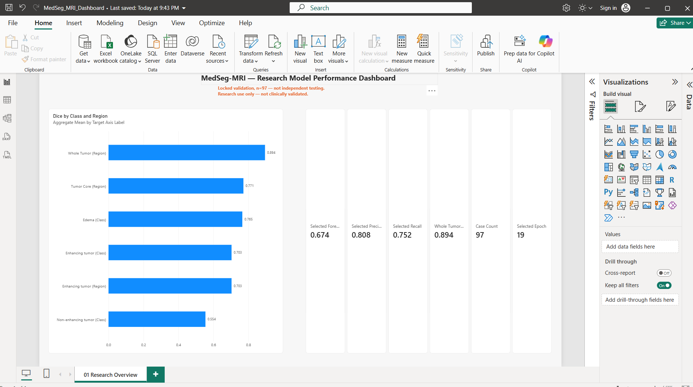
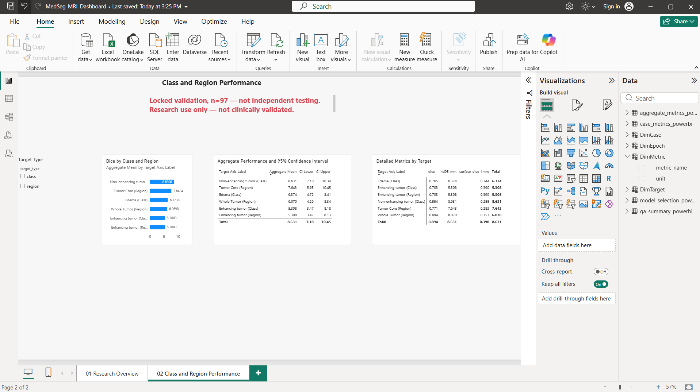
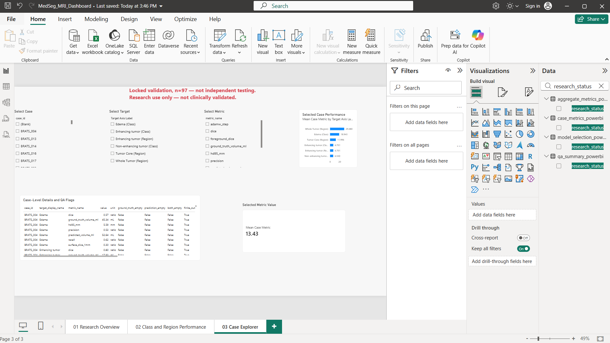
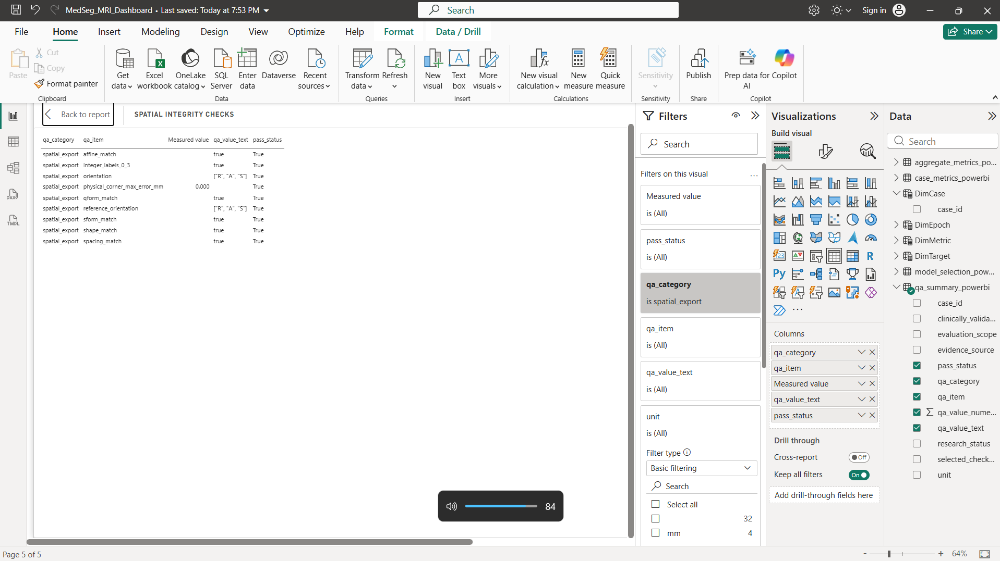
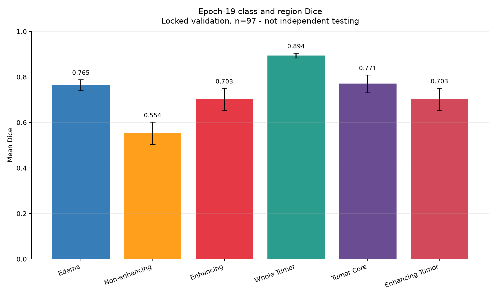
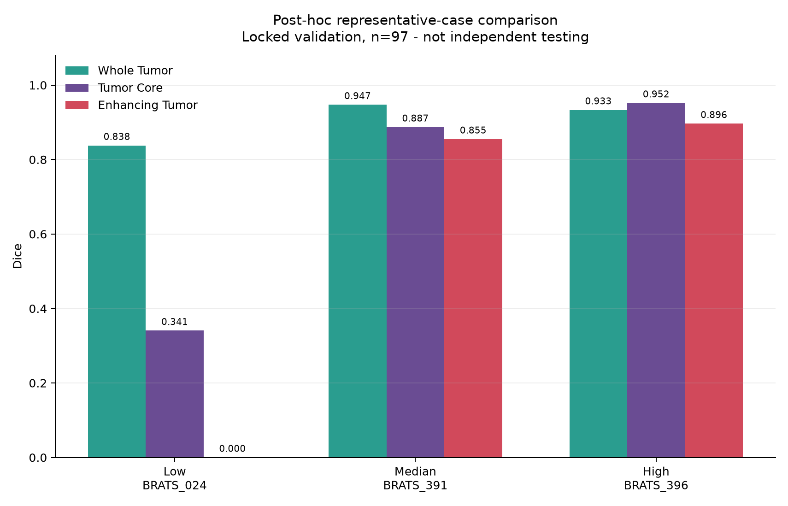
Authentic model evidence
Generated from the full local MedSeg project for review. These visuals are not synthetic portfolio mockups.
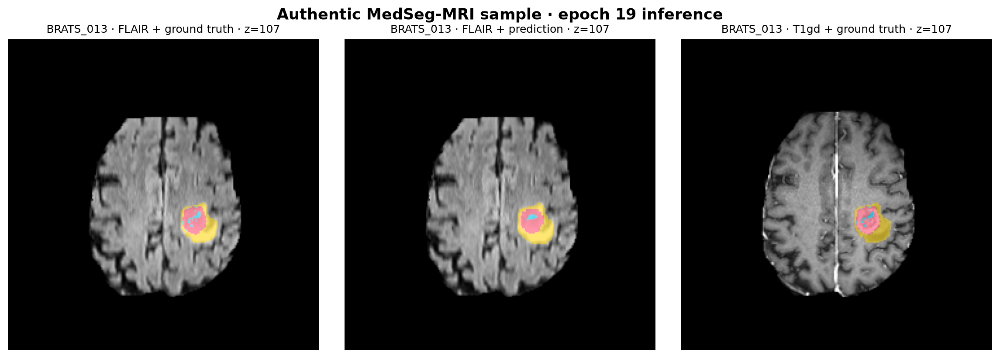
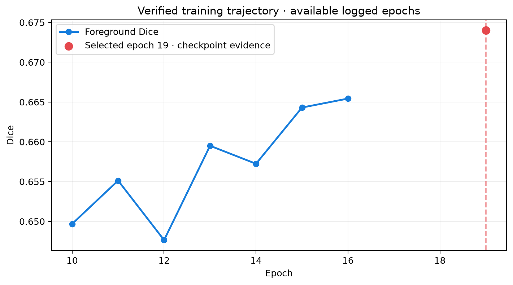
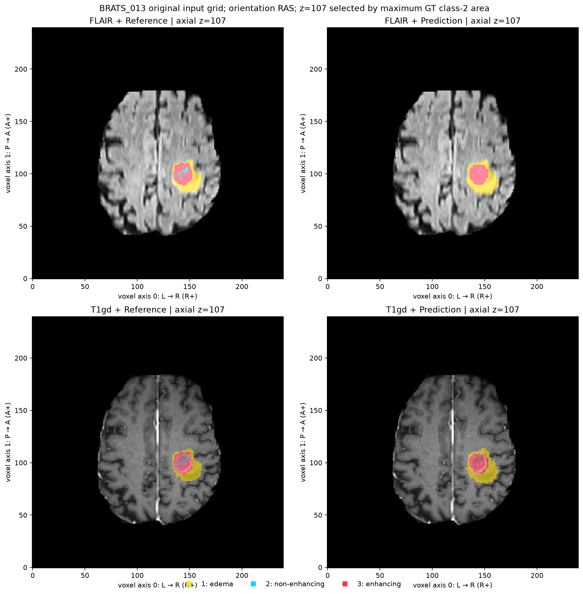
Scope and limitations
Epoch 19 is the selected research checkpoint. Whole Tumor Dice is 0.8944, foreground Dice is 0.6740, 36 QA checks passed, and spatial-export checks passed on the documented representative cases.
The 97-case set is locked validation, not independent testing. The provided test images are unlabeled, there is no external clinical validation, and the model must not be used for diagnosis or treatment decisions.
Correct the stale root training summary, package the original training and inference source into a reproducible repository, add automated tests and CI, expose a reviewed service boundary if needed, and validate prospectively across sites, scanners, populations, and acquisition protocols.
RegIntel 360 consolidates regulatory records, CAPA activity, complaints, biomedical maintenance, and audit findings into a repeatable data-processing workflow and interactive Power BI reporting layer. My role covered development of the data-processing pipeline, data model, risk engine, and BI dashboards.
Project pipeline
How it was built
The project evidence includes the ETL notebook, Power BI dataset, architecture documentation, schema notes, and dashboard screenshots.
The notebook creates raw CSV sources, standardizes column names, cleans text fields, removes duplicate rows, exports processed datasets, and writes ETL and data-quality reports. The quality gate targets 99% completeness and zero duplicate rows.
The model separates shared dimensions from domain facts: Dim_Device and Dim_Date connect to regulatory, CAPA, complaints, maintenance, and audits. A consolidated Fact_Device_Risk table supports device-level monitoring and executive prioritization.
Regulatory, CAPA, complaint, maintenance, and audit signals are normalized and combined into component scores. The overall score uses weights of 25%, 25%, 20%, 15%, and 15%, then classifies devices as Critical, High, Medium, or Low.
A Random Forest experiment uses a binary high-risk target derived from risk_score ≥ 50 and 12 risk-related features. The documented test set contains only nine observations, so this is presented as an exploratory extension rather than validated future-event prediction.
Architecture
A logical analytics architecture, not a claim of production deployment.
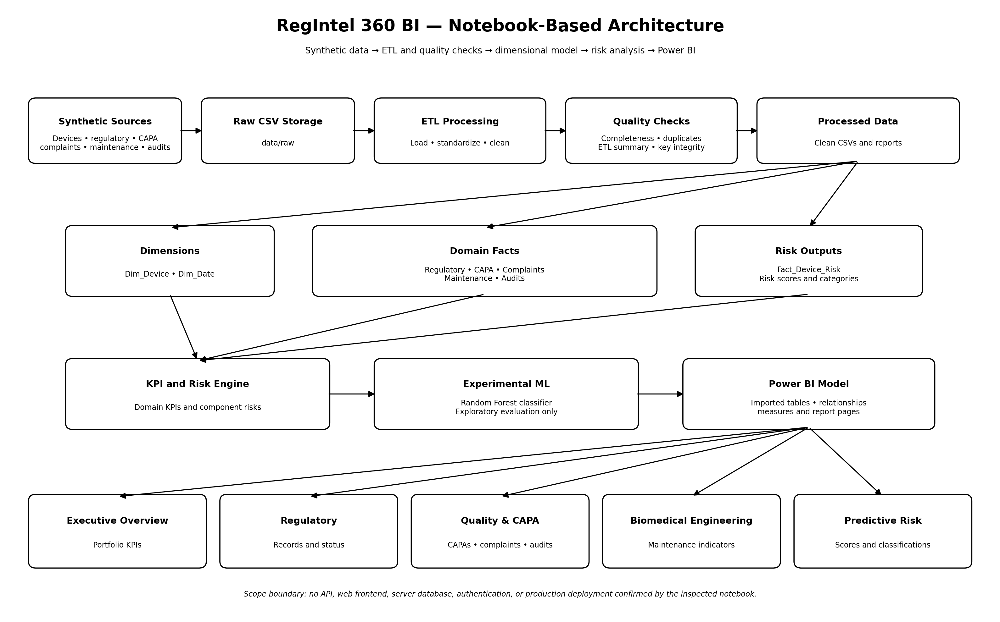
Evidence boundary: the inspected documentation confirms the notebook workflow and Power BI reporting layer. It does not confirm a REST API, web frontend, hosted database, authentication service, or production deployment.
Dashboard evidence
Screenshots from the RegIntel 360 Power BI report supplied for this portfolio.
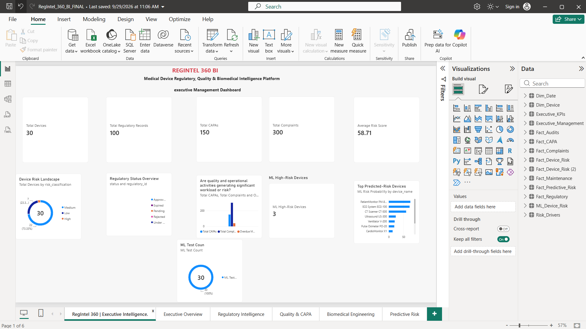
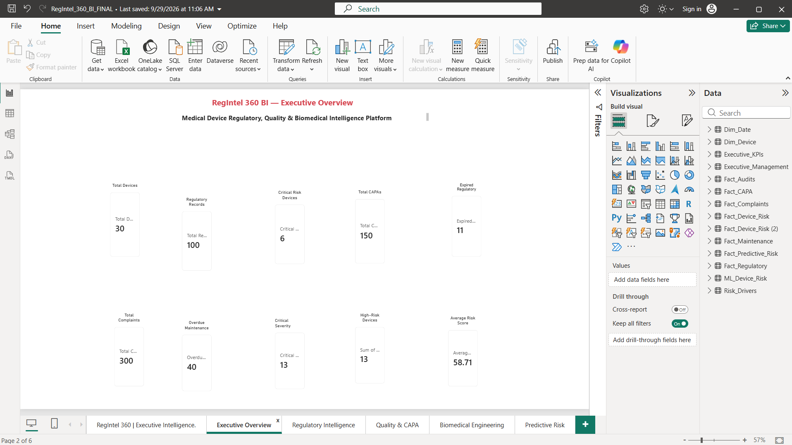
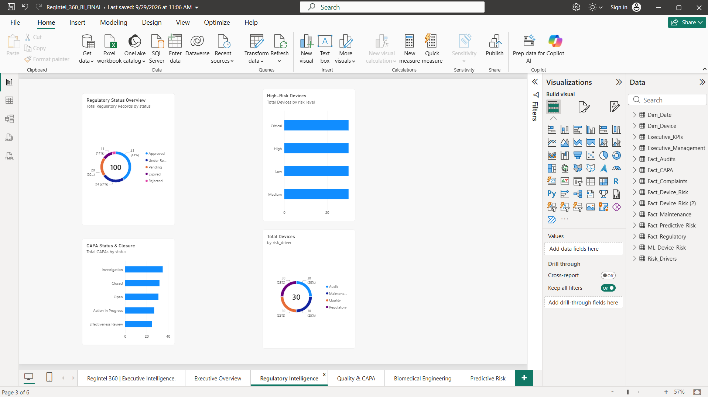
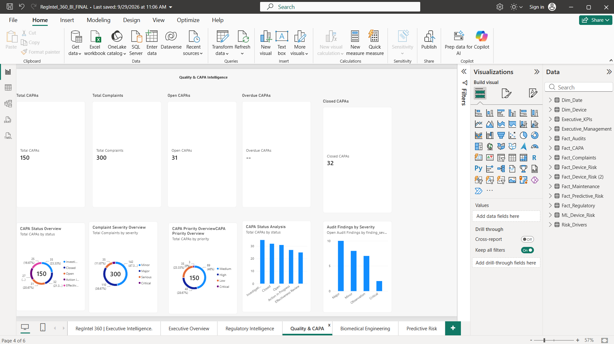
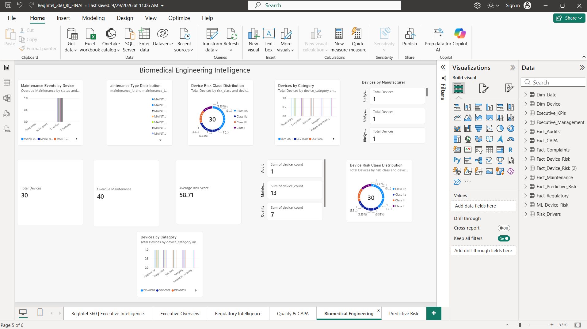
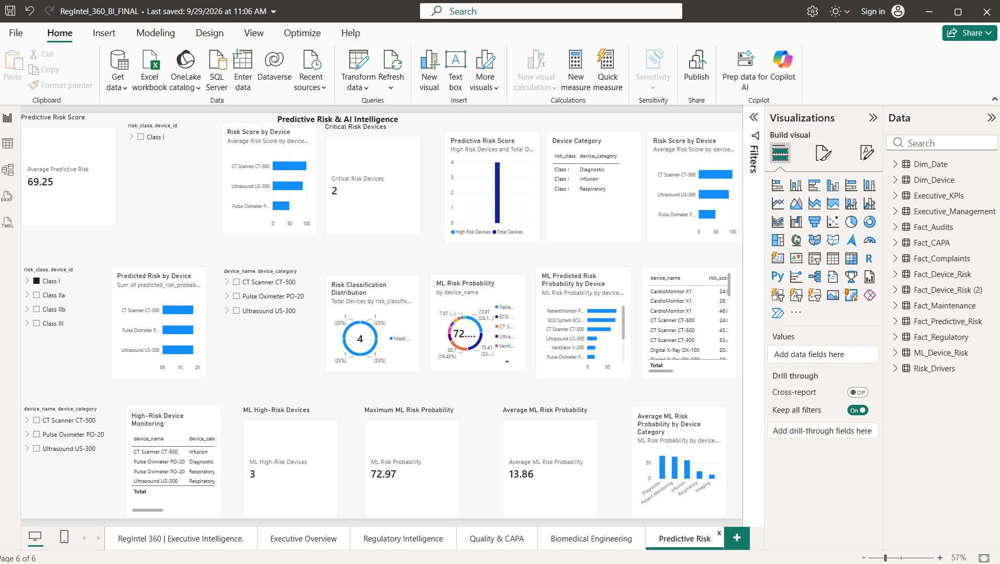
This prototype applies a reproducible service-workflow analytics pipeline to the NYC Department of Environmental Protection Work Order Management Module. It profiles 508,243 work-order rows, preserves the source fields and records, and prepares supported operational measures for Power BI. The supplied NYC data is environmental and public works data, not biomedical equipment service data.
Project status: complete. This case study presents the delivered work at portfolio level and separates observed NYC DEP measures from external biomedical research context.
Data and delivery pipeline
What the data supports
Metrics are based on this extract and stated filters, not inferred service targets.
Added-date volume spans December 1998 through June 2026; July 2025 is the highest month with 5,499 work-order rows. Activity counts use the recorded code and description.
Completion timestamps are present on 92.41% of records. Among eligible start-to-completion intervals, median duration is 0.5 hours, P90 is 6 hours, and P95 is about 145.66 hours. Missing completion does not confirm an order is open.
40,747 start dates and 38,571 completion dates are missing. 570 paired intervals end before they start. Date-range flags identify 23 start dates and 3 completion dates outside 1900 through the extract date. The duration distribution has a long tail and is shown with percentiles.
The NYC DEP file contains public-works orders and has no biomedical equipment ID, device downtime, agreed SLA due-date/target fields, customer-satisfaction responses, or validated first-response event. The dashboard’s local findings remain specific to those city work orders. Biomedical equipment availability, repeat equipment failures, SLA performance, customer satisfaction, and response-time KPIs are unavailable. WORKORDER_ADDED to WORKORDER_STARTED is not labeled response time; the timestamps are chronologically inconsistent on many rows.
“Centralized Monitoring of Biomedical Equipment in Honduran Public Hospitals: Open-Source Dashboard-WebGIS Architecture” (user-provided PDF) is a separate study that may inform a future biomedical data track. It is cited as background only; its figures and results are not presented as evidence or output of the NYC DEP prototype.
Duration eligibility requires parseable start and completion timestamps within the documented 1900-01-01 to 2026-11-24 range and completion not earlier than start. The date-range rule is an analytical filter, not proof that an out-of-range source value is false.
This project defines a configurable system for registering parts, tracking stock by location, routing requests and approvals, recording receipts, issues, returns, and transfers, and following shortages through replenishment. Department and approval rules are configuration, not a single-department hard-code.
Portfolio status: solution blueprint. The supplied project document defines scope, architecture options, data model, controls, workflow, KPIs, and an eight-phase delivery pipeline; it does not establish that the application has been built or deployed.
Illustrative process diagram based on the supplied blueprint; not a screenshot of a deployed application.
Department, site and location, part catalogue, supplier, equipment, inventory balance, request and request line, stock transaction, replenishment, user-role assignment, and approval history.
Receipts, issues, returns, two-sided transfers, and reasoned authorized adjustments create ledger entries. On-hand stock reconciles to opening count plus and minus recorded movements.
Power Apps for role-aware screens; Power Automate for approval and alert flows; SharePoint Lists for a suitably scoped MVP or Dataverse if relational and row-level security needs justify it. Confirm licensing, scale, and access rules before choosing.
Planned views include available quantity, low-stock locations, pending approvals, open requests, stock movements, and request fulfilment. Fulfilment time, inventory accuracy, stock value, and forecasting require validated timestamps, count records, approved cost rules, or history first.
Discovery and process mapping → data inventory and governance → data audit and migration → solution design → MVP build → department pilot and acceptance → reporting and rollout → operate and improve.
Microsoft documents Power Apps delegation limits, Dataverse role-based security, and Power Automate approvals. These inform design choices; they are not evidence that this proposed application is deployed. Delegation overview ↗ · Dataverse security ↗ · Power Automate approvals ↗
Evidence
Source: Zhang, Huang & Yuan, literature review. Reference figures only; these are not measured results for this project. Read the review ↗
The supplied scope defines an operational monitoring layer for partner-managed systems: installed-base quality, safety and performance update status, SRS last-seen freshness, service-key workflow status, GAMA role coverage, IT access tickets, and partner meeting actions.
Portfolio status: scope and delivery pipeline. The document defines intended data, KPIs, report pages, security boundaries, and acceptance criteria. No partner or system source data was supplied here, so the page shows no KPI results and does not claim a built or released dashboard.
Illustrative flow based on the supplied project scope; it is not a screenshot or live dashboard.
Active-system completeness, separate safety and performance update backlogs, SRS connected/stale/unknown states, and open partner or IT blockers.
Separate installed-base snapshots, update-status events, SRS snapshots, GAMA checks, access tickets, and partner actions to prevent joined-row double counts.
Track service-key status only, never the secret. Report GAMA and IT-ticket states from their authorized systems; Power BI remains the monitoring layer, not the system of record.
Define eligible populations, snapshot date, partner/country access, stale-signal threshold, and distinct unknown/not-required/overdue states before calculating completion or connectivity rates.
Evidence
Guidance frames equipment inventory as a maintained foundation and describes using management systems for equipment records, service events, and operational reports.
WHO technical series, 2025 ↗Recommendation F.780.7 calls for a unique equipment identifier linked across lifecycle data and core metadata such as model, serial number, location, status, and service provider.
ITU-T F.780.7, 2025 ↗These references inform the design; no partner performance outcomes have been measured for this project.
Built a local-first web interface and API that accept a single MR DICOM series, assemble a 3D volume, run HD-BET on CPU, and return a binary NIfTI mask. The intended targets are T1, T2, and FLAIR; so far, the end-to-end run used a public de-identified T2 sample.
Evidence status: The user-provided screenshots document the working upload interface, successful HD-BET processing and mask download, and the mask opened in a browser viewer. This confirms a technical smoke test—not acceptable segmentation quality.
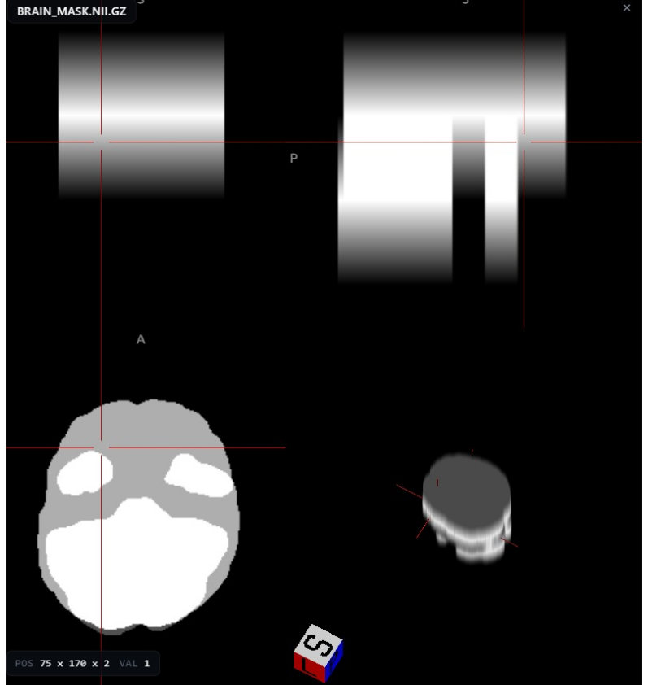
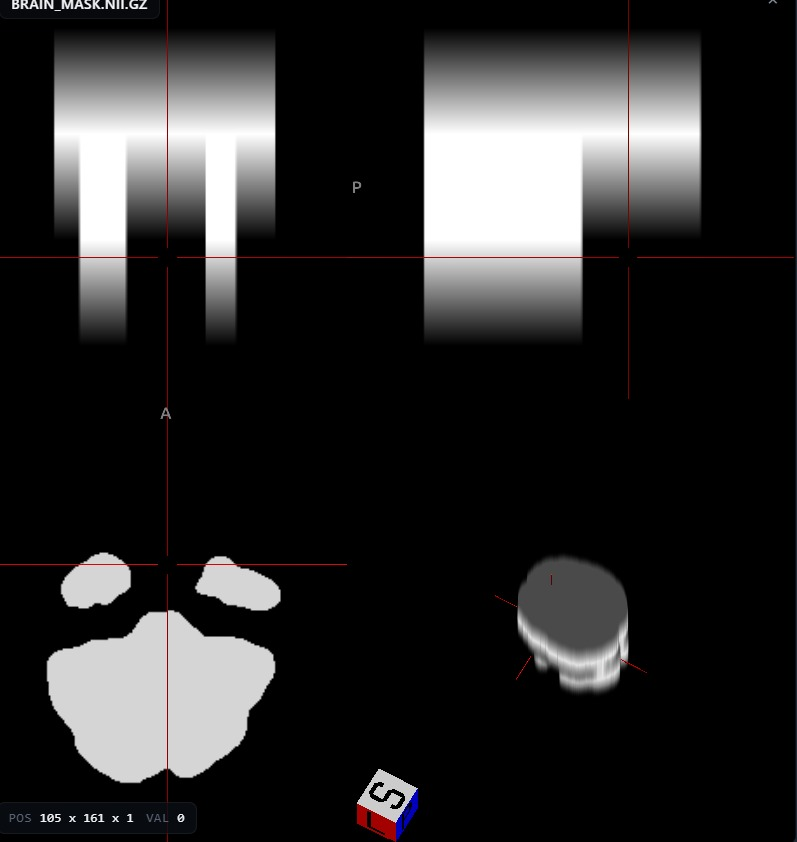
SimpleITK warned about nonuniform sampling or possible missing slices. The user selected four DICOM files, and the viewed output appears incomplete. Next, rerun with every slice in a complete licensed series and compare the mask over the original MRI. No quantitative evaluation, T1/FLAIR verification, or clinical validation has been performed.
React · TypeScript · FastAPI · pydicom · SimpleITK · HD-BET · PyTorchMIRA-RT (MR-guided Imaging & Adaptive Radiotherapy) is a focused literature synthesis of hybrid MRI–linear accelerator systems. It compares published MRIdian (0.35 T) and Elekta Unity (1.5 T) configurations, online adaptation and motion-management workflows, magnetic-field effects on dose, and clinical evidence for mobile abdominal targets.
Project status: completed research synthesis, version 0.2. The deliverable includes a platform comparison, descriptive indication/evidence matrix, glossary, limitations, and open research questions.
What the synthesis covers
Evidence boundary: these external publications support the scientific context of the synthesis; they are not measurements or outcomes produced by MIRA-RT. This targeted review is not a systematic review or GRADE assessment and makes no claim that one platform is clinically superior. The source document’s references [80]–[92] were not supplied, so those numbered citations are not claimed as verified; the synthesis uses its own traceable references.
Seven-month work arc
A portfolio narrative based on the documented work stages. It is not a fabricated calendar log.
Code and evidence
The full working project is now available for evidence review alongside the verified release package.
.venv\\Scripts\\python.exe -B src\\inference.py
--image case.nii.gz
--checkpoint selected_epoch19.pth
--output prediction.nii.gzOutput requirements are explicit: 3D, finite, integer labels 0–3, and the same spatial grid as the input.
if len(rows) != 97
or checkpoint_hash != expected_hash:
raise RuntimeError("Canonical evidence failed")The release generator checks canonical evidence before producing figures, results, and the hash-verified manifest.
The portfolio uses authentic project outputs, but the result remains research-only: locked validation is not independent testing, and the stale root training summary must be corrected before public release.
Research evidence · not clinical validationAbout
I’m Gourrab Mohammed, a biomedical engineer developing analytics, medical AI evaluation, regulatory intelligence, and decision-support workflows. My work connects data processing, technical validation, and clear communication for research and operational use.
Let’s connect
Biomedical Engineer · Gourrab Mohammed